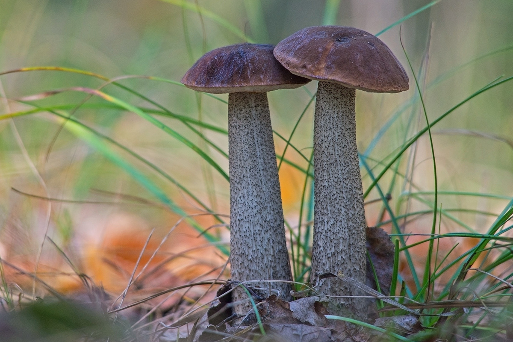

Березовик (съедобен)

Информация
- ШЛЯПКА: полушаровидная, затем выпуклая, гладкая, в сырую погоду слегка слизистая, различных тонов окраски - от желтой до темно-бурой. Нижняя поверхность губчатая, мелкопористая, светло-серая. Верхняя кожица тонкая, не снимается.
- НОЖКА: цилиндрическая, суживающаяся кверху, плотная, белая, покрыта продольно расположенными серыми хлопьевидными чешуйками.
- МЯКОТЬ: белая, на изломе быстро становится рыхлой и губчатой.
- СПОРОВЫЙ ПОРОШОК: коричневато-оливкового цвета.
- РАСТЕТ: в светлых лиственных лесах под березами с июля до конца сентября.
- УПОТРЕБЛЕНИЕ В ПИЩУ: пригоден для супов, маринования, жарки, соления и сушки. Нижгняя половина ножки несъедобна.
- ЯДОВИТЫЙ ДВОЙНИК: желчный гриб.